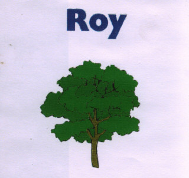

Our first
album burned to CD. This album is a collection of Tascam four-track Porta studio songs recorded live and in whatever room we were in at the time. Come for the strange collection of songs, stay for that incredible analog tape hiss.

Released in 1999
Spotify,
Apple Music,
iTunes,
YouTube Music,
Amazon,
Amazon Music and
Tidal.
We're also on Bandcamp under the pay as you like model.